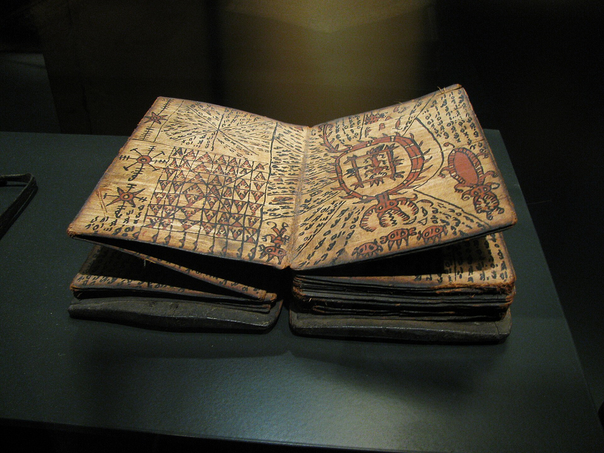

Home > Blog The Log of a Librarian > The Shape of Memory (11)
The Shape of Memory (11)
Seven Times the Letter Ta
A Batak Manuscript and the Uses of Writing
This post is part of a series that explores the many ways human societies have stored, transmitted, and transformed memory across time, beyond the narrow histories centered on books and writing. It approaches archives, documents, and memory systems as historically situated technologies shaped by power, ecology, material conditions, and cultural worldviews, while examining forms of transmission often excluded from dominant narratives of literacy and preservation: oral traditions, woven patterns, musical structures, ritual performances, landscapes, bodies, and other living infrastructures of memory. Check all the posts in this section's index.
Seven Marks on a Page
Towards the end of a Batak manuscript produced in northern Sumatra, in present-day Indonesia, probably sometime between the late nineteenth and early twentieth centuries, a scribe drew the same character seven times in succession.
The marks appear after a passage describing a ritual procedure involving a deity named Tata di Banua, a ripe fruit of the sugar palm, and the destruction of an enemy village. They are part of a larger set of instructions in which the nineteen basic characters of the Batak writing system are associated with supernatural powers and particular actions.
At first glance, there is nothing especially remarkable about repeating a written character. Children do it when learning to write, scribes do it when practising their handwriting, and printers have done it when testing their type. But these seven marks were not intended as an exercise in penmanship. They belonged to instructions in which writing itself played a role in the activity being described.
To understand what was happening, we need to travel to Sumatra, a large Indonesian island in Southeast Asia, situated southwest of the Malay Peninsula and separated from it by the Strait of Malacca. Its northern highlands surround Lake Toba, an enormous volcanic lake formed within an ancient caldera. This region is home to several related but distinct peoples collectively known as the Batak, whose languages, social institutions, religious practices, and cultural traditions have developed over many centuries.
Among the historical documentary traditions of these communities are some rather extraordinary books. The Batak call them pustaha, and the manuscript containing our seven repeated characters is one of them.
A Book That Unfolds
A pustaha does not resemble the ordinary books we are accustomed to handling. Instead of paper pages sewn or glued along a spine, it consists of a long strip of prepared tree bark, folded repeatedly in alternating directions. When opened, it extends like an accordion; when closed, its successive folds form a compact block that can be protected by wooden covers. The bark was traditionally obtained from the alim tree, identified as Aquilaria malaccensis, whose inner bark could be prepared to receive writing.
The manuscript containing the seven characters was described in 2016 by Giuseppina Monaco, a researcher working with the University of Hamburg's Centre for the Study of Manuscript Cultures. It contains forty-eight folded bark leaves, each measuring approximately eighteen centimetres by nine, with writing in black ink and illustrations in black and red. Thick wooden covers protect the two ends, and a plaited rattan band keeps the folded manuscript closed. It was probably produced in the late nineteenth or early twentieth century.
The book also has a history involving two identifiable people. In the early twentieth century, a German missionary physician named Johannes Winkler was working in the region west of Lake Toba. Among his patients was Ama Batuholing Lumbangaol, a Batak ritual specialist known as a datu. The two men developed a friendship, and when Winkler eventually returned to Germany, Ama Batuholing gave him several objects, including masks, calendars, and two manuscripts dealing with ritual knowledge. One of those manuscripts was the pustaha examined by Monaco, which remains in a private collection.
The word pustaha derives from the Sanskrit pustaka, meaning book, but its historical function was rather different from that of many familiar literary or religious volumes. These manuscripts generally contained specialized instructions concerning healing, divination, protective preparations, and rituals intended to influence events or supernatural forces. Some included procedures associated with warfare, the preparation of poisons, or actions intended to harm enemies. Their texts were often accompanied by drawings, signs, diagrams, and tables that formed part of the information being transmitted.
The people who produced and used these books were frequently datu, specialists whose responsibilities might encompass what we would now distinguish as medicine, ritual practice, divination, and spiritual protection. Their expertise was acquired through instruction and experience, often in relationships between teachers and pupils. A pustaha could preserve formulas, procedures, or reminders useful to someone already familiar with the tradition, but it was not necessarily intended to explain everything to an inexperienced reader.
This does not mean that Batak writing was used exclusively by ritual specialists. Other surviving documents, including letters and personal communications written on bamboo, demonstrate that writing had a wider social life. The pustaha represents one particular application of that literacy, distinguished by its contents, its material construction, and its relationship to specialized knowledge.
Nineteen Letters, Nineteen Deities
The Batak developed their own family of writing systems, historically related to the Brahmi-derived scripts that spread from South Asia into different parts of Southeast Asia. These systems differ from the Latin alphabet in an important respect: their basic consonant characters normally include a vowel. A sign representing ta, for example, contains both the consonant t and an inherent a. Additional marks can modify that vowel or otherwise change how the character is read.
In the tradition represented by our manuscript, the nineteen principal characters were known collectively as surat na sampulu sia, the nineteen letters. The signs could be used to write ordinary words, but the manuscript records another application of them: one in which their graphic forms were incorporated into ritual procedures.
Towards the end of the pustaha appears a section called pagar surat na sappulu sia, concerning protective magic involving these nineteen characters. Each of its passages associates a letter with a deity whose name derives from that letter. The deity introduces itself, identifies a surface on which a sign should be drawn, and describes the effect attributed to the procedure. Some of the formulas concern protection, while others address the destruction of enemies.
One passage begins with the words Ahu ma debata ni si Tata di Banua, identifying the speaker as the deity Tata di Banua. The name Tata is constructed by repeating the syllable ta, which is also represented by one of the basic characters of the Batak script. The passage goes on to specify that the sign should be drawn upon a ripe fruit of the sugar palm, with the intention of bringing destruction upon an enemy village. After these instructions, the manuscript displays the character ta seven times in succession.
Here the writing system is being used in several different ways simultaneously. The character represents a syllable, that syllable contributes to the name of a deity, and the character's graphic form becomes something that the ritual requires a practitioner to reproduce upon a particular object. The written sign is therefore not merely a convenient way of recording the instructions. It is one of the elements involved in carrying them out.
There is also a detail that deserves attention. The name Tata contains two repetitions of ta, but the manuscript displays the written character seven times after the passage. These are distinct features of the text, and they should not be confused. Monaco documents the sevenfold repetition, although her published description does not explain why that number was used. Without further evidence, we cannot establish whether it had a particular numerical significance, followed a conventional ritual pattern, or fulfilled some other purpose.
The important point is that the scribe did not simply write about a deity associated with the letter ta. The manuscript incorporated the character into a procedure that connected a spoken name, a written sign, a material object, and an intended supernatural effect.
Writing Something Into Existence
We tend to think of writing primarily as a means of preserving information or communicating something to another person. A letter conveys a message, a chronicle records events, a recipe describes how to prepare food, and a book allows ideas to travel beyond the people who first expressed them. These are familiar functions, but they do not exhaust the historical possibilities of written signs.
Consider an ordinary signature. Its graphic form may identify the person who produced it, but in certain circumstances signing a document also constitutes an action with legal or institutional consequences. The marks do not merely describe someone's agreement; producing them is part of the process through which that agreement is formally established. Writing can therefore participate in an action rather than simply report that an action has taken place.
The Batak manuscript presents a very different historical situation, but it allows us to examine a related distinction. Within the ritual system recorded in the pustaha, writing particular characters on particular objects formed part of the prescribed procedure. The signs had linguistic values, but their role in the ritual depended on more than their ability to represent speech. Their shapes, the surfaces on which they were drawn, and their associations with named deities all mattered.
This is not evidence that the procedures produced the supernatural results attributed to them, nor does it justify treating all Batak writing as magical. What it documents is a particular understanding of the possible uses of written characters. In this context, knowing how to read a sign and knowing what could be done with it were related but different kinds of knowledge.
There is another interesting aspect to the procedure. The manuscript contains instructions for producing writing somewhere else. The bark preserves the formula, while the sugar-palm fruit is identified as the surface upon which the character should be reproduced. The practitioner was expected to take something recorded on the page and incorporate it into an activity involving other materials and actions.
That relationship helps explain why pustaha could function as working resources for trained specialists. Their texts did not necessarily contain everything required to perform a procedure. They could preserve particular formulas and arrangements while relying on knowledge acquired through teaching, observation, and practice. The book was an important part of the transmission of knowledge, but the transmission did not necessarily end with the book.
What the Bark Preserved
We do not know precisely why the manuscript given to Johannes Winkler was originally produced. Monaco suggests several possibilities, including its use as a teaching resource or its preparation in response to interest from missionaries. Its surviving contents establish the kinds of knowledge it recorded, but they do not allow us to reconstruct every circumstance of its manufacture or use.
Nor can we determine how often the procedure involving Tata di Banua was actually performed, whether the sevenfold repetition followed a rule shared by other practitioners, or how an individual datu would have explained its significance to a pupil. The manuscript preserves one written formulation of the procedure, not a complete account of the tradition in which it operated.
Nevertheless, its pages give us something substantial. They show a writing system whose characters could acquire roles beyond the representation of speech, and a manuscript that preserved instructions for carrying those characters into other materials and circumstances. They also remind us that the information contained in a historical document may have been intended for readers who possessed forms of knowledge that the document itself does not explain.
The seven repetitions of ta have survived on a strip of folded bark, far from the highlands where the manuscript was made. We can still recognize the character, examine the accompanying instructions, and understand something of the relationships its original users established between writing and ritual action. Other aspects of that practice remain beyond our reach, not because the manuscript has necessarily lost its contents, but because the surviving writing was never the whole of the activity.
The pustaha preserved instructions for making marks that were meant to appear elsewhere. That is the small but remarkable discovery hidden among its folds: a book in which writing was not only a means of remembering what to do, but also one of the things to be done.
Bibliography
- Monaco, Giuseppina (2016). "A Gift from a Medicine Man." Manuscript of the Month, no. 59. Hamburg: Centre for the Study of Manuscript Cultures, University of Hamburg.
- Teygeler, René (1993). "Pustaha: A Study into the Production Process of the Batak Book." Bijdragen tot de Taal-, Land- en Volkenkunde, 149 (3), pp. 593–611.
- Voorhoeve, Petrus (1975). Catalogue of Indonesian Manuscripts. Part 1: Batak Manuscripts. Copenhagen: The Royal Library.